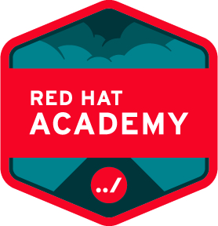

SEKILAS SAYA
Seorang mahasiswa tingkat akhir di Universitas Mikroskil Medan dengan Jurusan Teknik Informatika dan Peminatan Teknik Informatika. Saat ini selain menjadi seorang mahasiswa, saya juga adalah seorang frontend developer di salah satu startup di Yogyakarta.
PENGALAMAN KERJA
CV. Lumintu Logic | Kontrak Frontend Developer
Feb 2022 - Sekarang
Sebagai frontend web developer di Lumintu Logic, saya bekerja untuk proyek klien Karaton Ngayogyakarta Hadiningrat yaitu Kapustakan. Saya bergabung di tim backoffice untuk melakukan restrukturisasi kode yang telah dibuat menjadi lebih reusable dan lebih clean code. Selain di tim back-office, saya bergabung di tim front-office untuk merancang/mendesign tampilan dari Kapustakan Kraton Yogya dan menterjemahkannya ke dalam kode. Kode yang telah diterjemahkan digunakan sebagai template untuk digenerate menggunakan SSG(Static Site Generator) yaitu eleventy(11ty). Selama di Lumintu Logic, saya terbiasa menggunakan teknologi seperti HTML, CSS (Native / Bootstrap / Tailwind) dan Javascript (Native / JQuery). Metode pengembangan selama bekerja adalah Agile yaitu dengan menggunakan SCRUM.
CV. Lumintu Logic | Magang Frontend Developer
Agu 2021 - Jan 2022
Magang di Lumintu Logic sebagai frontend developer, saya bekerja dalam tim untuk mengembangan proyek seperti Lumintu Event dan Chat Widget. Pengembangan dilakukan dengan metode agile untuk menghasilkan produk yang MVP berupa website yang responsif. Tanggung jawab saya sebagai frontend developer adalah bekerja sama dengan backend developer untuk menghasilkan website yang dinamis, dengan mengkonsumsi API yang dihasilkan API Generator Directus. Selain proyek untuk pengembangan website, saya juga merancang tampilan (UI/UX) dari Museum Keraton Yogyakarta menggunakan alat seperti figma berdasarkan hasil pengumpulan data menggunakan Focus Group Discussion sebelumnya. Teknologi yang digunakan selama magang di Lumintu Logic adalah HTML, CSS (Native / Bootstrap), Javascript (Native / JQuery) dan penggunaan library socket.io sebagai implementasi penggunakan protokol websoket.
PT. Tapian Nadenggan | Magang IT Teknisi
Dec 2016 - Feb 2017
Selama magang di PT. Tapian Nadenggan, saya bekerja dibagian divisi IT&Support. Bekerja untuk melakukan instalasi komputer baru sesuai standard dari perusahaan, menginstalasi/memperbaiki jaringan LAN komputer yang ada dibeberapa kantor cabang, dan juga melakukan perbaikan hardware dan software komputer yang bermasalah.
PENDIDIKAN
Formal
Universitas Mikroskil
Berstatus mahasiswa aktif tingkat akhir dengan IPK sementara terakhir adalah 3,62. Belajar mengembangkan website secara fullstack dengan teknologi seperti React, Vue, Node, Express dan sebagai database menggunakan MySQL, SQL Server dan MongoDB.
Kursus & Sertifikasi
Secure Coding Training at Widya Security
Mempelajari kerentanan-kerentanan yang popular di pengembangan website dan belajar cara memitigasi celah tersebut seperti SQL Injection, Cross Site Scripting dan lainnya.
Bootcamp React-JS Web Frontend at Sanbercode (PT. Santai Berkualitas Syberindo)
Belajar pengembangan frontend website dengan metode bootcamp intensif. Belajar mulai dari penggunaan component dan props, state & components lifecycle, context, react router, autentikasi sampai deployment. Hasil dari bootcamp ini adalah dapat menciptakan website Single Page Applicaion menggunakan React JS dan ANT Design sebagai template UI.

Bootcamp Path Pengembangan Web (Node-JS) at Progate, Inc. X Universitas Gadjah Mada
Belajar pengembangan website secara fullstack menggunakan teknologi HTML, CSS, Javascript (Node JS) dan MySQL Database. Hasil dari kursus ini adalah dapat membuat website dinamis secara pribadi maupun dalam tim.

Redhat System Administration I (RH124) at Redhat Academy
Belajar dasar dasar dan konsep untuk menjadi sistem administrator linux full-time. Kurikulum yang diajarkan adalah pengenalan command-line, managing physical storage, manage and secure files and file systems dan lain-lainnya. Hasil akhir dari training ini dapat melakukan konfigurasi, instalasi, peningkatan dan perawatan sistem linux menggunakan standar dan prosedur yang sudah ada dan juga dapat menulis dan men-deploy skrip untuk mengerjakan automasi dan administrasi sistem.
KETERAMPILAN
| Tipe |
List Keterampilan |
| Frontend Web Development |
- HTML
- CSS
- Javascript (Native / JQuery)
- 11ty (eleventy)
- React-JS
- ANT-Design
- Bootstrap
- Tailwind
|
| Backend Web Development |
- Node JS
- Express
- REST/RESTful API
|
| Database Development |
- SQL(MySQL, SQL Server)
- No-SQL(MongoDB)
|
| UI/UX Design |
- Laws Of UX
- Visual Hierarchy
|
| Bahasa Pemrograman |
|